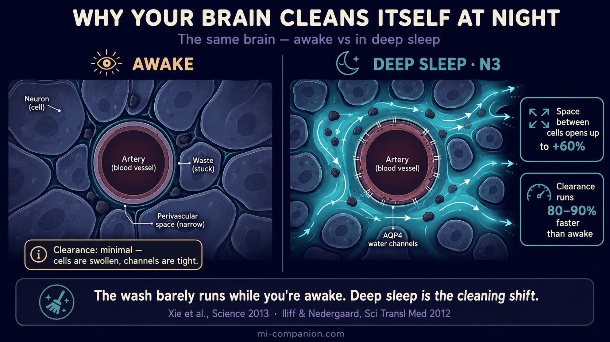
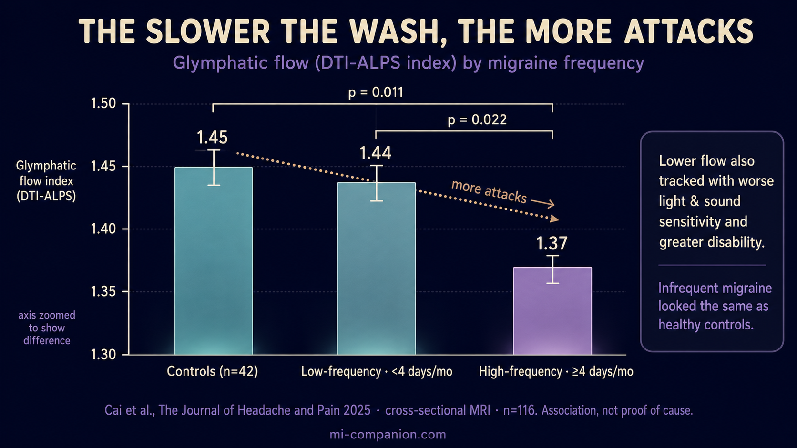

By Rustam Iuldashov
30 years lived experience with chronic migraine | Sources: 17 peer-reviewed references including Science Translational Medicine, Science, PNAS, The Lancet Neurology, Journal of Neuroscience, Annals of Neurology, The Journal of Headache and Pain | Last updated: June 28, 2026
Medical Review: This content is based on peer-reviewed research from Science Translational Medicine, Science, PNAS, The Lancet Neurology, Journal of Neuroscience, Annals of Neurology, The Journal of Headache and Pain, Brain Sciences, Headache, and others.
Important Notice: This article is for informational purposes only and does not replace professional medical advice. The author is not a licensed physician or healthcare professional. The role of the glymphatic system in migraine is an active and still-evolving area of research. Always consult your doctor before making any changes to your treatment or sleep routine.
Key Takeaways
- Your brain runs a waste-clearance system — the glymphatic system, discovered only in 2012 — mostly during deep sleep, when the space between brain cells swells by up to 60%.[1][4]
- A single night without sleep measurably raises waste proteins like beta-amyloid in the human brain.[6]
- In migraine, cortical spreading depression physically closes the brain's drainage tunnels and stalls the wash; CGRP and inflammation, both cleared this way, then linger.[7][8][9]
- MRI data show people with frequent attacks have measurably slower glymphatic flow — the slower the flow, the more attacks and disability. The evidence is real but still emerging and mixed.[10][11][12]
- Your strongest lever is deep sleep quality: a consistent schedule, side sleeping, well-timed exercise, and limiting evening alcohol all support the nightly wash.[4][14][15]
The Organ That Couldn't Take Out Its Trash
Your kidneys filter your blood. Your tissues drain into lymph nodes. Every organ in your body has a way to take out the trash — except, scientists long believed, the one that makes the most. Your brain burns a fifth of your energy. It should generate a mountain of waste. For over a century, no one could say where that waste went.
In 2012, a team led by Maiken Nedergaard at the University of Rochester found it hiding in plain sight.[1] With a new method to watch fluid move through a living brain in real time, they uncovered an entire plumbing system no one had ever seen. They named it the glymphatic system — from glia, the support cells that run it, and lymphatic, the body's drainage network.[1][2]
Nedergaard called it a dishwasher for the brain. And here is the part that matters most for anyone with migraine: it runs while you sleep.
How the Brain Washes Itself
Picture tiny fluid-filled tunnels wrapped around your blood vessels. Clean cerebrospinal fluid pumps in along the arteries, rinses through the brain tissue, lifts away metabolic waste, and drains out along the veins.[1][3] The flow depends on a water channel called aquaporin-4 (AQP4), studded across the “endfeet” of astrocytes — the support cells that grip your vessels. Think of them as floodgates, opening and closing to drive the wash.[1][3]
The genius is the timing. When you drop into deep, slow-wave sleep, your brain cells shrink and the space between them swells by as much as 60%.[4] Room opens up. The fluid surges through. In landmark 2013 work, Nedergaard's team showed that clearance during deep N3 sleep runs 80–90% faster than while you're awake.[4][5] A waking brain barely cleans itself at all.
So “sleep on it” is more than a saying. While you lie unconscious, your brain is rinsing the day's chemical residue down the drain.

One Bad Night Leaves a Mark
A 2018 study made that abstract idea unforgettable. Researchers at the U.S. National Institutes of Health used PET scans to measure beta-amyloid — a sticky waste protein the glymphatic system clears — in 20 healthy adults.[6] They scanned each person twice: once after a full night's rest, once after a single night without sleep.
One sleepless night was enough. Beta-amyloid had measurably built up in the hippocampus and thalamus — regions that anchor memory and route sensory signals.[6] The brain's trash had already begun to pile up.
For a migraine brain, that is not a footnote. That is the whole story.
Where Migraine Enters
Migraine and broken sleep have always traveled together. Poor sleep triggers attacks; attacks wreck sleep. For decades the link was a riddle. The glymphatic system gives the cleanest answer yet — and the mechanism is stark.
Migraine aura is driven by cortical spreading depression (CSD), a slow wave of intense electrical activity that rolls across the brain's surface. In 2017, scientists watched what that wave does to the cleaning system in living mice. A single pass clamped the drainage tunnels almost completely shut for minutes, and glymphatic flow stalled.[7] The wash switched off at the exact moment the brain needed it most.
It gets sharper. CGRP — the inflammatory molecule at the center of every modern migraine drug — is cleared partly through this same route.[8] A sluggish system lets CGRP and other irritants linger, keeping pain nerves switched on.[8][9] Cortical spreading depression, excess CGRP, neuroinflammation: the three best-studied engines of migraine share one thread. Each one jams the glymphatic system.[9]
The 2025 Evidence: The Dirtier the Brain, the More Attacks
For years this was a story told in mice. Then came DTI-ALPS, a non-invasive MRI measure that estimates glymphatic flow without injecting anything.[10] It opened a window into the living human migraine brain.
A 2025 study in The Journal of Headache and Pain scanned 74 people with episodic migraine against 42 healthy controls.[10] The result was a clean gradient. People with frequent attacks — four or more migraine days a month — showed significantly slower glymphatic flow than controls and than people with infrequent attacks. The slower the flow, the more migraine days, the harsher the light and sound sensitivity, the deeper the disability. People with infrequent attacks looked just like the healthy controls.
In those scans, the high-frequency group's glymphatic index measured 1.37, against 1.45 in healthy controls and 1.44 in people with infrequent attacks (p = 0.011 and p = 0.022).[10]
A separate 2024 study in Annals of Neurology went further, finding both glymphatic and meningeal-lymphatic drainage measurably impaired in people with chronic migraine.[13]
In plain terms: the brains running the dishwasher slowest were the ones getting hit hardest.
One honest caveat. This science is young. Some studies find no impairment in migraine,[12][16] and one even found increased glymphatic activity as migraine turns chronic — perhaps a brain straining to compensate.[11]
The animal mechanism is clearer than the human imaging, and these are correlations, not proof that slow cleaning causes attacks.[10][13] What the evidence does show, again and again, is a tight link between glymphatic function and migraine burden — and that link runs straight through sleep.

⚠️ When a Headache Needs a Doctor, Not a Blog
The science above is about the long game of brain maintenance — not a substitute for medical care. Seek urgent help if you experience:
- A sudden, explosive “worst headache of your life” (thunderclap onset)
- Headache with fever, stiff neck, or confusion
- New weakness, slurred speech, vision loss, or a seizure
- A headache after a head injury, or one that wakes you from sleep
And book a doctor if your usual pattern changes: more frequent attacks, or a new kind of headache after age 50. A rising attack count is exactly the signal worth acting on early — not waiting out.
The Vicious Cycle — and Where to Break It
Lay the pieces side by side and a loop appears. Bad sleep slows the nightly wash. Waste and inflammatory molecules accumulate. An irritable brain fires another attack. The attack shreds the next night's sleep. The wash slows further. Round and round it turns.
The loop has a weak point you can actually reach: the quality of your deep sleep.[17] Unlike most of migraine biology, the glymphatic system answers to plain, low-cost habits.
What You Can Actually Do Tonight
Protect slow-wave sleep, not just hours in bed. The wash runs hardest during deep N3 sleep.[4][5] A steady bed and wake time — weekends included — keeps the circadian rhythm the system follows in tune.[14]
Sleep on your side. In animal imaging, the side-lying position cleared waste better than the back or stomach.[15] The human data are still thin, but it costs nothing to try.
Move — at the right hour. Regular aerobic exercise deepens sleep and strengthens the vascular pulses that drive glymphatic flow, though a hard workout near bedtime can backfire.[14] Train earlier.
Be honest about alcohol. Even one evening drink flattens slow-wave sleep and blunts the night's clean-up[14] — and alcohol triggers migraine on its own.
Guard the night after a bad one. If a single sleepless night raises brain waste,[6] then defending the next night isn't indulgence. For a migraine brain, it's maintenance.
None of this replaces your treatment plan. But it reframes sleep from passive downtime into the most powerful cleaning shift your brain gets — and one of the few migraine levers held entirely in your own hands.
⚕️ Important Medical Disclaimer
This article is for informational and educational purposes only and does not constitute medical advice, diagnosis, or treatment. The author, Rustam Iuldashov, is not a licensed physician, neurologist, or healthcare professional. He is a patient advocate with 30 years of personal experience living with chronic migraine.
All clinical claims in this article are sourced from peer-reviewed research published in indexed medical journals. Study designs and sample sizes are noted where applicable.
Always consult a qualified healthcare provider for questions about your individual health, migraine treatment, or medication decisions. Never start, stop, or switch migraine medications without discussing it with your doctor first.
The glymphatic system is a young and active field of research, and findings on its role in migraine remain mixed and, in places, contradictory — some studies report slower clearance, others report normal or increased activity. Nothing here should be read as settled fact or as a reason to delay seeking care. The sleep, exercise, and lifestyle suggestions are general wellness measures, not treatments; if your attacks are frequent or worsening, that is a reason to see a doctor, not to manage alone. This content was last reviewed for accuracy on June 28, 2026.
References
- Iliff JJ, Wang M, Liao Y, et al. “A paravascular pathway facilitates CSF flow through the brain parenchyma and the clearance of interstitial solutes, including amyloid β.” Science Translational Medicine, 4(147):147ra111 (2012). doi:10.1126/scitranslmed.3003748. Study design: Experimental (in vivo mouse imaging).
- Jessen NA, Munk ASF, Lundgaard I, Nedergaard M. “The Glymphatic System: A Beginner's Guide.” Neurochemical Research, 40(12):2583–2599 (2015). doi:10.1007/s11064-015-1581-6. Study design: Review.
- Rasmussen MK, Mestre H, Nedergaard M. “The glymphatic pathway in neurological disorders.” The Lancet Neurology, 17(11):1016–1024 (2018). doi:10.1016/S1474-4422(18)30318-1. Study design: Review.
- Xie L, Kang H, Xu Q, et al. “Sleep drives metabolite clearance from the adult brain.” Science, 342(6156):373–377 (2013). doi:10.1126/science.1241224. Study design: Experimental (in vivo mouse imaging).
- Hablitz LM, Nedergaard M. “The Glymphatic System: A Novel Component of Fundamental Neurobiology.” Journal of Neuroscience, 41(37):7698–7711 (2021). doi:10.1523/JNEUROSCI.0619-21.2021. Study design: Review.
- Shokri-Kojori E, Wang GJ, Wiers CE, et al. “β-Amyloid accumulation in the human brain after one night of sleep deprivation.” PNAS, 115(17):4483–4488 (2018). doi:10.1073/pnas.1721694115. Study design: Crossover human PET study. n=20.
- Schain AJ, Melo-Carrillo A, Strassman AM, Burstein R. “Cortical Spreading Depression Closes Paravascular Space and Impairs Glymphatic Flow: Implications for Migraine Headache.” Journal of Neuroscience, 37(11):2904–2915 (2017). doi:10.1523/JNEUROSCI.3390-16.2017. Study design: Experimental (in vivo mouse imaging).
- Messlinger K. “The big CGRP flood — sources, sinks and signalling sites in the trigeminovascular system.” The Journal of Headache and Pain, 19(1):22 (2018). doi:10.1186/s10194-018-0848-0. Study design: Review.
- Vittorini MG, Sahin A, Trojan A, et al. “The glymphatic system in migraine and other headaches.” The Journal of Headache and Pain, 25(1):34 (2024). doi:10.1186/s10194-024-01741-2. Study design: Review (EHF-SAS).
- Cai X, Sun W, Cai M, et al. “Impaired glymphatic function contributes to high-frequency attacks in patients with episodic migraine.” The Journal of Headache and Pain, 26(1):132 (2025). doi:10.1186/s10194-025-02070-8. Study design: Cross-sectional MRI study. n=116 (74 migraine, 42 controls).
- Zhang X, Wang W, Bai X, et al. “Increased glymphatic system activity in migraine chronification by diffusion tensor image analysis along the perivascular space.” The Journal of Headache and Pain, 24(1):147 (2023). doi:10.1186/s10194-023-01673-3. Study design: Cross-sectional MRI study.
- Cao Y, Huang M, Fu F, et al. “Abnormally glymphatic system functional in patients with migraine: a diffusion kurtosis imaging study.” The Journal of Headache and Pain, 25(1):118 (2024). doi:10.1186/s10194-024-01825-z. Study design: Cross-sectional MRI study. n=66 (37 migraine, 29 controls).
- Wu CH, Chang FC, Wang YF, et al. “Impaired glymphatic and meningeal lymphatic functions in patients with chronic migraine.” Annals of Neurology, 95(3):583–595 (2024). doi:10.1002/ana.26842. Study design: Cross-sectional MRI study.
- Reddy OC, van der Werf YD. “The Sleeping Brain: Harnessing the Power of the Glymphatic System through Lifestyle Choices.” Brain Sciences, 10(11):868 (2020). doi:10.3390/brainsci10110868. Study design: Review.
- Lee H, Xie L, Yu M, et al. “The Effect of Body Posture on Brain Glymphatic Transport.” Journal of Neuroscience, 35(31):11034–11044 (2015). doi:10.1523/JNEUROSCI.1625-15.2015. Study design: Experimental (in vivo rodent imaging).
- Lee DA, Lee HJ, Park KM. “Normal glymphatic system function in patients with migraine: a pilot study.” Headache, 62(6):718–725 (2022). doi:10.1111/head.14320. Study design: Cross-sectional pilot.
- Ornello R, et al. “The potential role of sleep quality in the relationship between glymphatic function and migraine frequency.” Headache (2026). doi:10.1111/head.15019. Study design: Cross-sectional.

How We Create Content
- Peer-reviewed sources only. Science Translational Medicine, Science, PNAS, The Lancet Neurology, Journal of Neuroscience, Annals of Neurology, The Journal of Headache and Pain, Neurochemical Research, Brain Sciences, Headache.
- Study transparency. Study design and sample sizes noted for all clinical references.
- Source verification. All claims backed by numbered references with DOI links.
- Honesty about uncertainty. Where the evidence is mixed or contested — as it is for the glymphatic system in migraine — we say so plainly.
- Experience + Science. 30 years personal migraine experience combined with peer-reviewed evidence.
- Regular updates. Articles reviewed when significant new research emerges.
Protect the Nights That Protect Your Brain
Migraine Companion lets you log sleep alongside attack frequency, triggers, and symptoms over months — so you can see, in your own data, how the nights you protect line up with the attacks you avoid.
Last reviewed: June 2026
Next scheduled review: December 2026